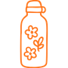

<!DOCTYPE html><html lang="en"><head><meta charset="utf-8"><meta content="width=device-width, initial-scale=1.0" name="viewport"><title> Steel Vacuum Water Bottle A1 | AquaSteel Drinkware - Home </title><link href="../../Assets/css/style.css" rel="stylesheet"><link href="../../Assets/image/waterbottle_logo.png" rel="icon"></head><body class="theme-bottle"><div class="page-layout"><aside class="sidebar"><div class="company-brand"><h2 class="company-name"> AquaSteel Drinkware </h2></div><nav aria-label="Main navigation" class="vertical-nav"><a class="active" href="index.html"> Home </a><a class="" href="about.html"> About Product </a><a class="" href="spec.html"> Technical Specifications </a><a class="" href="features.html"> Components / Features </a><a class="" href="faq.html"> FAQ </a></nav></aside><main class="image-main"></main></div><footer><div class="footer-inner"><p class="footer-copyright"> &copy; 2026 AquaSteel Drinkware. All rights reserved. </p><p class="footer-navigation"> Additional product information is available in the Technical Specifications and FAQ sections. </p><p class="footer-links"> Privacy Policy <span aria-hidden="true"> | </span> Terms of Use <span aria-hidden="true"> | </span> Copyright Notice </p><p class="footer-company"> AquaSteel Drinkware supports hydration education, environmental-awareness initiatives, public workshops, and community learning programmes. The organization periodically works with schools, libraries, recreation groups, environmental organisations, and nonprofit partners to encourage responsible reuse, safe beverage storage, materials literacy, and access to clear public information. </p></div></footer></body></html>